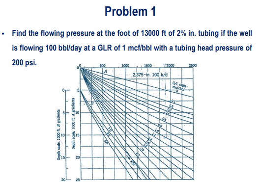
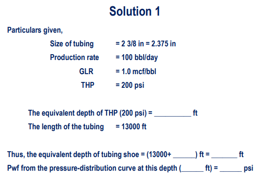

Problem 01
Finding Flowing Bottomhole Pressure
Problem Statement

Graphical Solution

Analysis & Methodology
Objective: Find the flowing pressure at the foot (\( P_{wf} \)) of \( 13,000 \text{ ft} \) of \( 2 \frac{3}{8} \text{ in.} \) tubing. The well is flowing \( 100 \text{ bbl/day} \) at a Gas-Liquid Ratio (\( GLR \)) of \( 1 \text{ mcf/bbl} \), with a given Tubing Head Pressure (\( P_{wh} \)) of \( 200 \text{ psi} \).
Given:
- \( L = 13,000 \text{ ft} \)
- \( q = 100 \text{ bbl/day} \)
- \( GLR = 1.0 \text{ mcf/bbl} \)
- \( P_{wh} = 200 \text{ psi} \)
Step-by-Step Procedure:
- Locate THP: Start at the top pressure axis and locate the Tubing Head Pressure of \( 200 \text{ psi} \) (marked as ①).
- Find Equivalent Depth: Drop vertically down from \( 200 \text{ psi} \) to intersect the gradient curve corresponding to \( GLR = 1.0 \text{ mcf/bbl} \) (marked as ②).
- Read the equivalent depth horizontally on the left axis. The equivalent depth for the wellhead is approximately \( 3,000 \text{ ft} \) (marked as ③).
- Add Tubing Length: Add the actual length of the tubing to this equivalent depth to find the equivalent depth of the bottom of the well.
\( L_{eq, bottom} = 3,000 \text{ ft} + 13,000 \text{ ft} = 16,000 \text{ ft} \)(marked as ④). - Locate New Point: Move horizontally to the right from the new depth of \( 16,000 \text{ ft} \) to intersect the same GLR curve (\( 1.0 \text{ mcf/bbl} \)) (marked as ⑤).
- Read BHP: Move vertically upward from this intersection point to read the corresponding pressure on the top axis.
Final Result: The flowing bottomhole pressure (\( P_{wf} \)) is approximately \( 1850 \text{ psi} \) (marked as ⑥).